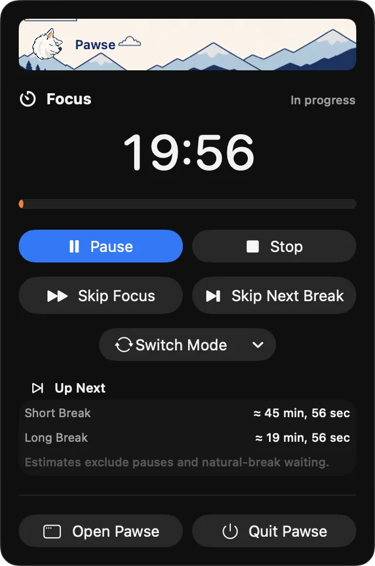
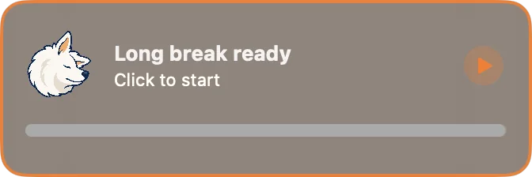
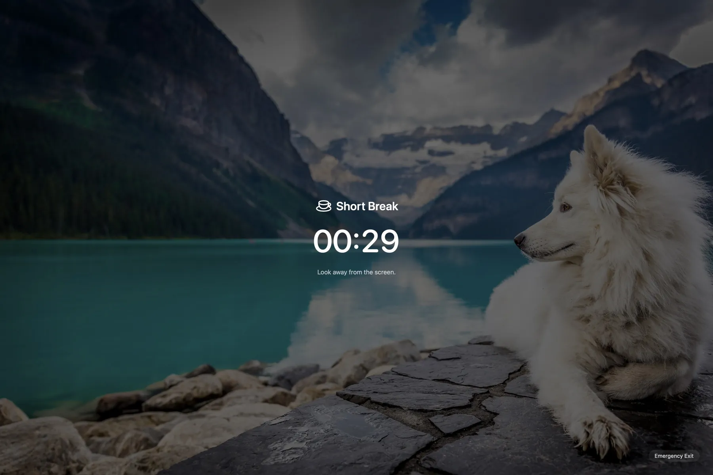
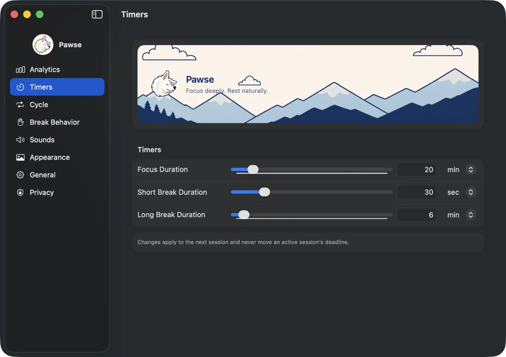
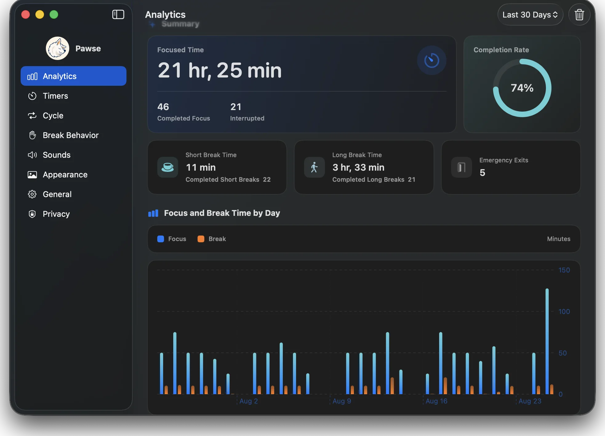

Finish your thought. Then take the break.
Pawse lives in your menu bar. When Focus ends, it waits for a natural stopping point before the break takes over your screen.

25 min
Focus
30 sec
Short break
10 min
Long break after 2 cycles
Zero does not have to interrupt you.
Save the file. Finish the sentence. Pawse keeps the break ready without demanding your attention.
- Focus endsYour focused time is recorded.
- Break soonA small reminder appears without stealing focus.
- You pauseClick it, or briefly stop keyboard and pointer activity.
- Break startsIf you resume right away, Pawse waits again.


Small when you work. Calm when you rest.
Pawse uses the parts of macOS that already feel familiar. No browser dashboard or extra service in the cloud.
- Native menu bar controls
- Configurable focus and break cycle
- Wallpaper or custom break image
- Local session history

See the rhythm you are building.
Review focused time, completion rate, breaks, and interruptions. Your history remains local to this Mac.

What happens on your Mac stays there.
Pawse only reads aggregate idle time while a break is waiting. Settings and session history stay on your Mac.
- No key recording
- No pointer tracking
- No app or website history
- No screen capture
- No analytics upload
- No account required